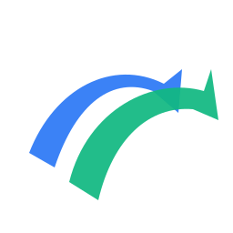
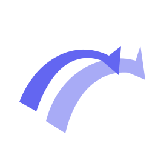
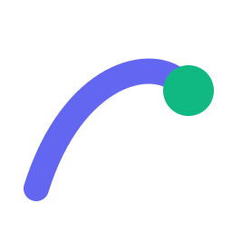
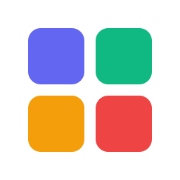

Aperçu sur fond clair / sombre / barre de tâche Windows. Ouvrir ce fichier dans un navigateur.
Trajectoire ascendante + point d'arrivée. Le plus aligné sur la nouvelle direction sobre.
Reprend l'identité historique (bleu + vert), mais sans la plate blanche qui fait "carré" en barre de tâche.

Compromis : silhouette historique mais en une seule couleur (alignement palette). Garde l'âme, gagne en sobriété.

Trajectoire indigo + cible emerald. Plus narratif : "départ → objectif". Bicolore aligné landing.

Monogramme C ouvert + point. Style Linear / Vercel / Stripe. Le plus "produit moderne" mais perd l'oiseau.
Référence directe au bento-grid de la landing : 4 carrés = 4 features. Multi-couleur sectorielle. Distinctif mais bruyant à 16px.
